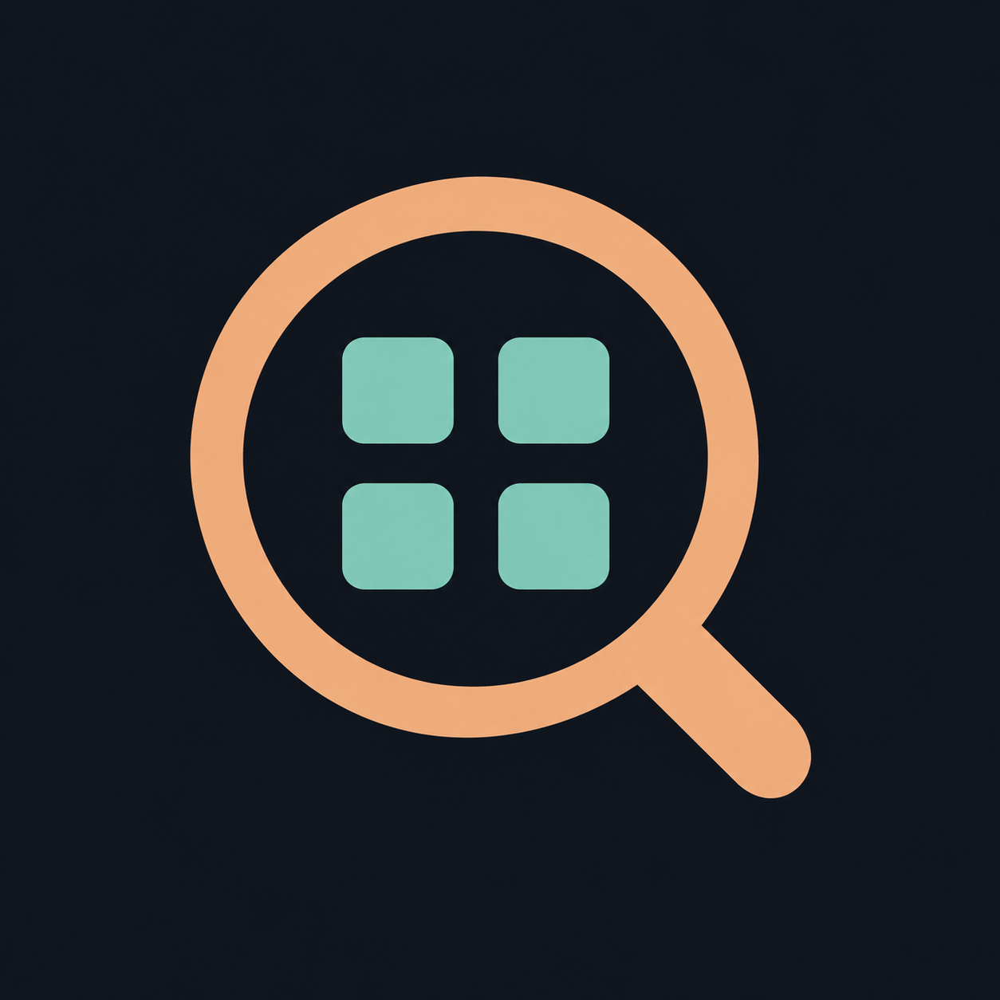

01 / INSPECTION
128 px 64 px 32 px
Matrix Lens
A scope over a weight matrix. The clearest connection to inspecting model weights.
Icon concepts using WeightScope’s navy, peach, and mint palette. Compare the full mark with smaller sizes below.